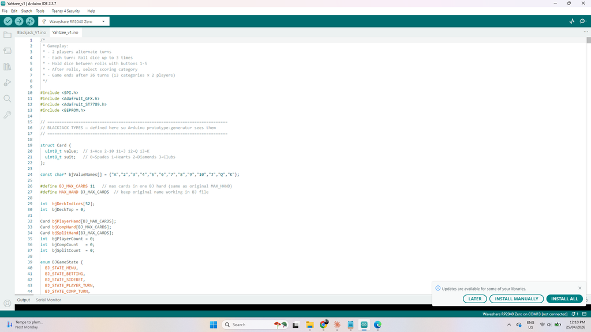

My favourite types of games are ones that require little bit of skill, and a little bit of luck and Yahtzee is definitely one of those games.
So in my continuing journey in all things microcontrollers, I decided to build my own electronic Yahtzee handheld game.
In this build I used a Raspberry Pi Zero which is an ultra-compact version of the Raspberry Pi Pico.
The game can be played in either 2 player mode or player 1 vs the computer.
Initially this seemed relatively straight forward.
However, the more I worked on the code, the more I fell down a rabbit hole of trying to make the computer (or AI as I have been calling it!) actually learn and become a better player the more it plays!
I worked with Claude, and AI assistant developed by Anthropic to develop the code and the AI learning. If you are new to coding and want a place to start, then give Claude a go.
Now, the code is HUGE! Like 13K 14K 15K lines huge. I wasn’t planning to make it such a monster but trying to get the AI to learn was (and is still) a journey.
Initially the AI was rule based but these weren’t subtle enough when it came to making the right decisions.
I thought well Yahtzee is just probabilities, I’ll get it to use those to determine best strategy.
Using this strategy along with adding some weighted values helped to make the AI a better player.
However, it was still ultimately rules based.
I needed a way for the AI to learn which is why I implemented the ability for the AI to play itself and work out best strategies and adjust the weights according to how well certain types of games went.
It also examines the way player 1 is playing and adapts!
Over time this has been finessed, improved and worked on until I was happy (almost) with it.
If you would like more information and run through of how the AI operates then check out Step 1 for a more in-depth review of the AI.


As usual, I've created a parts list which can be found in my GitHub page and in the PDF file attached to this step.
The PDF includes links and images of each of the parts which will make it easy to order the correct ones for this build.
The parts list attached doesn't included the PCB or front panel. You'll need to jump to the next step which goes through how to get yours printed.

When I first went on the journey to add a player 1 vs the computer, I didn't think it would take me down such a deep rabbit hole.
The game of Yahtzee is a game of subtle nuances that revealed themselves to me when I tried (and still trying) to make an AI 'God Mode'.
I wanted an unbeatable opponent, someone that always knows the right rolls and holds and could use probability, strategy and learned weights to never lose.
The below is an outline of where I am currently.
In a Nutshell
The AI holds dice based on what it's closest to completing, always thinking about whether the potential reward is worth the risk of rerolling.
It respects special categories like Yahtzee and Large Straight enough to keep chasing them even late in a roll.
It gets smarter the more you play against it, gradually learning what tends to win and adjusting its priorities accordingly.
And at higher difficulties, it's simply more willing to gamble on a better outcome rather than accepting a safe but mediocre score.
The Big Picture
The AI isn't just picking randomly or following a simple checklist.
It's constantly asking itself two questions on every turn: "Which dice should I keep?" and "Is what I have now worth stopping for, or should I roll again?" Everything it does flows from trying to answer those two questions as smartly as possible.
How It Decides Which Dice to Hold
Think of the AI like a card player who's always looking at their hand and asking "what am I closest to completing?" It looks at the dice and runs through a mental checklist, roughly in this order:
First, is the game almost over?
If there are only 2 or 3 scoring boxes left to fill, it stops being flexible and commits completely to whatever it still needs — chasing a Yahtzee, holding a straight sequence, or locking in pairs for a Full House.
No second-guessing at that point.
Crucially, it uses the actual remaining categories to decide what to hold — it won't hold two different numbers if neither of the remaining categories can use them.
Second, are we close to the upper section bonus?
The +35 bonus for scoring 63+ points in the top half of the scorecard is huge.
If the AI is getting close, it'll often prioritize holding dice that help fill those upper boxes (Ones through Sixes), even if it means passing on something flashy.
Third, what's the best hand it's sitting on?
It looks at whether it has four-of-a-kind, three-of-a-kind, a pair, or a run of consecutive numbers, and figures out which of those is worth developing.
Importantly — it doesn't just hold the "most dice." It asks which hand is actually worth the most if completed.
Four 1s sounds like a lot to hold, but if the Ones box is already filled and Yahtzee is still available, it'll go for Yahtzee instead.
One key rule it follows hard: Pairs beat nothing, but a straight run beats a pair.
If you have something like 2-3-4-5 showing, the AI will completely ignore any pair in those dice and hold the run, because straights are worth a flat 30 or 40 points — more predictable and often more valuable than trying to build three-of-a-kind from a low pair.
Probability Tables and Expected Value
Rather than using gut feel, the AI uses hardcoded probability tables to calculate the exact odds of completing any hand from its current dice. These are precomputed two-dimensional tables:
For each possible way to hold the dice, the AI computes an Expected Value (EV) — the average score it can realistically expect if it plays that way.
It then picks whichever hold pattern produces the highest EV, adjusted by the learned weights described below.
This EV approach is the core engine; everything else (special cases, endgame logic, opponent model) either feeds into it or overrides it when warranted.
Locked Decisions: When EV Doesn't Apply
Some situations are so mathematically clear that the AI locks the decision before any EV comparison or opponent-model adjustment is allowed to interfere:
These decisions set a 'decision made' flag that prevents any downstream logic — conservative opponent overrides, endgame risk adjustments, trailing/leading adjustments — from cancelling them.
How It Decides Whether to Roll Again
On each roll, the AI looks at what it currently has and compares it to what it could get with another roll. A few rules of thumb guide it:
After the first roll, it almost always rerolls.
One roll with a random set of dice rarely gives you the best possible outcome, so unless it rolled a Yahtzee or Large Straight right out of the gate, it's rolling again.
There's also a minimum score floor: on the first roll, the AI won't stop unless it has 35+ points in hand (40+ on God Mode) — no matter what the EV says.
After the second roll, it gets more selective.
If what it has now is good enough — say, a confirmed Full House or a solid score in an upper box — it'll stop.
But if it has four-of-a-kind with Yahtzee still available, or four numbers in a row with Large Straight still available, it'll always take that third roll.
Those are too valuable to give up.
It also reads the score.
If the AI is losing by a decent amount, it plays more aggressively — willing to risk a worse outcome for a shot at something big.
If it's comfortably ahead, it plays it safe and locks in reliable points.
Difficulty Margins
Difficulty directly affects how much better the EV of rerolling needs to be before the AI commits to it:
The Three Difficulty Levels
Normal — Plays a solid but forgiving game. Stops rolling if it has a decent score, won't chase long shots. Good for casual play.
Hard — More aggressive.
Willing to reroll a decent hand in search of something better.
Understands when high-value setups like four-of-a-kind are worth gambling on.
Also uses learned data to slightly adjust its aggressiveness — if aggressive play has been winning more often than conservative play, it leans harder into it.
God Mode — Almost never stops after just one roll. It squeezes every last roll out of every turn, always chasing the maximum possible outcome. Very tough to beat consistently.
Each difficulty also has its own base aggressiveness setting (0.35 for Normal, 0.65 for Hard, 0.95 for God Mode) which is used to scale certain risk-taking decisions beyond just the roll-again margin.
Exploration vs Exploitation
About 10% of games, the AI deliberately plays differently from its learned "best" strategy.
This is called an exploration game — it picks a random strategy (conservative or aggressive) with a randomized aggressiveness weight somewhere between 0.3 and 0.9.
The other 90% of games it sticks to what's been working best — this is exploitation.
This balance ensures the AI doesn't get permanently stuck doing the same thing if something slightly different would actually work better.
How It Learns Over Time
This is where it gets interesting — the AI actually remembers how past games went and slowly adjusts its behavior.
All learning data is saved to the device's EEPROM (non-volatile flash memory), so it persists even after you turn it off.
A checksum is stored alongside the data so the device can detect and recover from any corruption.
Here's what it tracks and learns from:
What scores tend to lead to wins.
If the AI notices that games where it scores a Large Straight tend to go well for it, it'll start prioritizing Large Straights a little more.
If Full Houses don't seem to help much, it pulls back on chasing them.
These preferences are stored as weight values for each category type.
How confident it is in each weight.
The AI doesn't treat all its data equally.
Each weight adjustment is scaled by how many data points back it up — a weight based on 50 games carries four times more authority than one based on only 5 games.
Early in its learning life the AI makes small cautious adjustments; as data builds it makes larger, more decisive ones.
Whether rerolling was actually worth it — by score bracket.
Every time the AI rerolls, it records what score it had available before rolling and whether the result was better or worse.
It tracks this in four separate buckets based on starting score (0–9, 10–19, 20–29, 30+).
Over time it builds a detailed picture — "when I had 20–29 points and rerolled, did it usually pay off?" — and adjusts its reroll threshold accordingly for each bracket.
How each specific hold pattern performs.
For every combination of dice value and count held (e.g. "held two 5s", "held three 6s"), it records how often that pattern led to a score of 20 or more.
This is tracked in a 6×6 grid (values 1–6 × counts 1–5).
These per-pattern quality scores feed back into hold decisions.
When chasing Yahtzee or straights historically pays off.
Separate success rate counters track every time the AI pursued a Yahtzee, Large Straight, Small Straight, Full House, 3-of-a-Kind, or 4-of-a-Kind, and how often it actually completed it.
If the Yahtzee success rate falls below 12%, it tightens the entry threshold (only chases with 3+ matching dice).
If the rate climbs above 28%, it gets more aggressive (will chase from just a pair with 2 rolls left).
Which hold pattern count works best (0–5 dice held).
The AI tracks how often it held 0, 1, 2, 3, 4, or 5 dice and which hold counts were most associated with wins.
This isn't used to override decisions directly, but is displayed in the stats screen and informs the big picture of how the AI is playing.
Endgame close-game outcomes.
From turn 11 onwards, if the game is within 20 points, the AI records whether it won or lost.
If it's historically been struggling to close out tight games (win rate below 45%), it becomes more aggressive in the final turns — more willing to take a risky roll rather than banking a mediocre score.
The Chance category timing.
Chance (score any total) is most valuable early in the game when all other slots are still open and future scores are unpredictable.
The AI tracks when it scores Chance (turns 1–3, 4–6, 7–9, or 10–13) and how often each timing leads to a win.
It also tracks head-to-head outcomes of "took Chance vs took a weak upper slot" so it can make a better decision in that recurring dilemma.
Score position at turn 10.
This is tracked as a running average of (AI score minus human score) at the exact halfway point of every game.
If the AI is consistently 20+ points behind at turn 10, it's a signal that it's being too conservative in the first half — so it raises the aggression on early rerolls.
Category timing.
For each of the 13 scoring categories, the AI tracks the average turn it tends to score that category.
This historical timing data is stored and helps inform category priority in future games.
What you tend to do.
The AI quietly tracks your playing style — how often you hit the upper bonus, how many Yahtzee's you roll, how aggressive you are (measured by reroll rate and chase attempts), and your average score.
It uses this to calibrate its own play:
The Four Strategies It Tests Against Itself
When you use the Train AI option in the Tools menu, the AI plays against itself to practice. It runs four different versions of itself with slightly different personalities:
After each batch of self-play games, it looks at which personality won the most and nudges its main strategy a little in that direction.
It's a slow process — you won't see it transform overnight — but over dozens of games it genuinely does shift toward what's been working.
Each strategy variant stores its own set of 8 weight values alongside its performance record (wins, games played, total score).
The system uses exploration vs exploitation here too — it mostly picks the variant with the best recent win rate, but occasionally gives the others a shot so they can keep accumulating data.
Category Selection
Once the AI has decided to stop rolling, it chooses which scoring category to use. This is more nuanced than it might appear:
What Gets Displayed in the Stats Screens
The AI Statistics screen (accessible from the Tools menu) shows six pages of data including: overall win rate and score history, reroll improvement rates per score bracket, hold pattern frequency, endgame win rates in close games and blowouts, the four strategy variant performances, Chance category timing, turn-10 score position history, and the current live values of all 8 learned weights.
The graphs also track early-game vs recent-game average score so you can see whether the AI is improving over time.
Timeout Protection
If the AI ever gets into an unexpected state and takes more than 30 seconds to make a decision on any turn, a watchdog timer forces it to pick the best available category immediately and resets its state.
This prevents the game from ever hanging.
A note on 'God Mode'
God Mode is the closest the AI gets to theoretically optimal Yahtzee play.
It uses maximum aggression, the full probability tables, all learned weights, and never applies conservative overrides.
It is beatable — Yahtzee has a meaningful luck component — but it will consistently make the highest expected value decision available to it on every single roll.


We all have different levels of knowledge, so when it comes to a build like this I want to make sure that I'm providing enough information so anyone with some basic soldering skills can make it.
That includes ensuring there are instructions on how to get your own PCB's printed (which is super easy!)
So with that said, the first thing you will need to do is to get the front panel and PCB printed.
I use JLCPCB (not affiliated) to get this done.
The front panel is actually just a PCB without any components included!
The front panel design is done in a program called Inkscape (available free) and the panel including the drilled holes is done in Fusion 360 (also free!)
The files that you need to build the Yahzee game can be found in my GitHub page.
This also includes the parts list, Gerber files for the PCB & front panel, schematic, Code.
Download the files to your computer
STEPS:
Send the Gerber files (zipped) to a PCB manufacturer like JLCPCB who will print the PCB and front panel for you.
Download all of the files from my GitHub page to your computer and send the zipped Gerber files off to the PCB manufacturer of choice.


NOTE - you might notice some changes in the design of the panels and PCB.
That's because I took images for this Instructable of the first version.
I'm now on the improved 2nd version which is slightly different in design.
The following step ensures that you can remove the front panel easily and without having to de-solder anything. This is important, especially for maintenance, battery changes, troubleshooting etc.
STEPS:


This is a good time to get a couple of the other components ready to solder into place
STEPS:
Ok - now move onto the next step


STEPS:


I’ve used a red and black momentary buttons to help differentiate the button controls. It isn’t necessary but I think it helps identify the right buttons to use.
STEPS:


I have used a phone battery as the power source. These work great and even an old second-hand one will do the job just fine. You can also buy new ones still at a good price.
STEPS:

So - I have provided an exact, step by step guide on how to Upload the code to your Raspberry Pi. If you follow the below, you won't have any issues with uploadeding the sketch.
Step 1 — Install the Arduino IDE
Step 2 — Add the RP2040 Board Package
The Arduino IDE does not support the RP2040 out of the box. You need to add it via a custom board URL.
Step 3 — Install the Required Libraries
Go to Tools → Manage Libraries and search for and install each of the following:
Adafruit GFX Library
Adafruit ST7735 and ST7789 Library
When installing the ST7789 library, a popup will ask "Install all dependencies?" — click "Install All". This also installs the required Adafruit BusIO library automatically.
SPI and EEPROM are both built into the RP2040 board package and do not need separate installation.
Step 4 — Set Up the Sketch Folder
The code is split across two .ino files. Arduino requires all files in a sketch to be in the same folder, and that folder name must exactly match the main .ino filename.
Both files should appear as two tabs at the top of the IDE. If you only see one tab, the folder name or file placement is wrong — fix that before continuing.
Step 5 — Select the Waveshare RP2040 Zero Board
If you don't see "Waveshare RP2040 Zero" listed, select "Raspberry Pi Pico" instead — the RP2040 Zero is pin
compatible and this will work correctly.
Setting Value:
Flash Size - 2MB (no FS)
CPU Speed - 133 MHz
Optimize - Optimize Even More (-O3)
USB Stack - Pico SDK
Debug Level - None
Step 6 — Put the Board Into Upload Mode (BOOTSEL)
The RP2040 Zero needs to be in bootloader mode before it will accept an upload.
Your computer will now recognise the board as a USB storage drive called RPI-RP2. You do not need to do anything with this drive — the Arduino IDE handles everything automatically from here.
Step 7 — Select the COM Port
If no port appears, unplug and replug the cable and try again. Make sure you completed Step 6 (BOOTSEL mode) correctly.
Step 8 — Compile and Upload
If compilation fails, the most common causes are:
Step 9 — Verify It's Working
The board reboots automatically after upload. Within one or two seconds you should see the intro animation on the ST7789 TFT display.
If the screen stays blank:
Step 10 — Future Uploads (No BOOTSEL Needed)
After the first successful upload, all subsequent uploads do not require holding the BOOT button. The Arduino IDE can reset the board into bootloader mode automatically over USB.
Just make your changes and click Upload — it will handle the reset for you.
If the automatic reset ever fails and the IDE reports it can't find the port, manually enter BOOTSEL mode again using the Step 6 method.


The goal of Yahtzee is to roll 5 dice in 13 rounds and try and get a higher score than your opponent.
Sounds pretty simple and a game based on luck right!
Well, just like any good game, there is some luck involved but also a good chunk of skill and a little bit of je ne sais quoi!
You can find the rules in the actual game itself under tools. Also check out the official rules here.
Hardware Overview
The console has 10 buttons and two displays:
The TFT screen shows menus, dice, the scorecard, and all AI information. The 5-digit 7-segment display shows the current dice values, with a decimal point lit on any die that is held.
Turning On / Start Screen
Power on and the console plays an animated intro — five dice tumble onto the screen and the YAHTZEE title assembles itself. After the animation settles you are taken to the main menu automatically.
Main Menu
Three options, navigated with UP / DOWN, selected with ENTER:
2 Player Game — Two humans take turns on the same console. 13 turns each (26 total turns).
1 vs Computer — Play against the AI. Selecting this opens the difficulty menu before starting.
Tools — Settings, statistics, AI training, and bonus games.
Choosing AI Difficulty (1 vs Computer)
After selecting 1 vs Computer, choose one of three difficulty levels with UP / DOWN, then press ENTER to start. Press ROLL to cancel and go back.
DifficultyDescription
Each difficulty stores its learned behaviour independently, so playing Normal does not affect the Hard AI's memory or strategy.
Playing a Turn
Every turn you must score somewhere. If nothing fits, pick a category to sacrifice and score zero.
Auto-Advance Mode
When enabled (set in Tools), the human player's first roll is thrown automatically at the start of each turn. Useful for keeping the game moving. Toggle it on/off in Tools → Auto-Advance.
Game End
After all 13 categories are filled for both players (26 turns total), the game calculates final scores including the upper section bonus (+35 if you scored 63+ in Ones–Sixes) and any Yahtzee bonuses (+100 each for additional Yahtzees after the first).
The winner is announced with a celebration animation.
Press ROLL to return to the main menu.
Tools Menu
From the main menu, select Tools with ENTER. Navigate with UP / DOWN, select with ENTER.
ItemWhat it does
7-Seg Bright - Adjust the brightness of the 7-segment dice display. Press ENTER to enter adjustment mode, then UP/DOWN to change level, ENTER to confirm.
AI Training (Self-Play)
Select Tools → Train AI. Use UP / DOWN to choose how many games to run (10–500, default 50). The display estimates how long it will take (~5 games per second). Press ENTER to start or ROLL to cancel.
During training, four strategy variants compete against each other.
Each variant has different weightings for Yahtzee, straights, Full House, 3-of-a-kind, and upper bonus pursuit.
After training, the best-performing variant's weights are blended into the main AI and saved to memory.
When to train: Run training when you first build the console to give the AI a baseline, then again after 20–30 games against it to let it refine based on what it has learned from playing you.
You do not need to retrain regularly — the AI also learns continuously from every real game.
Reset AI learning: From Tools → AI Stats, hold ENTER for 3 seconds. This wipes all learned weights and statistics and resets the AI to its factory defaults.
AI Stats (6 Pages)
Navigate pages with UP / DOWN, press ENTER to go back.
PageShows
AI Performance Graphs (6 Pages)
Navigate with UP / DOWN, back with ENTER.